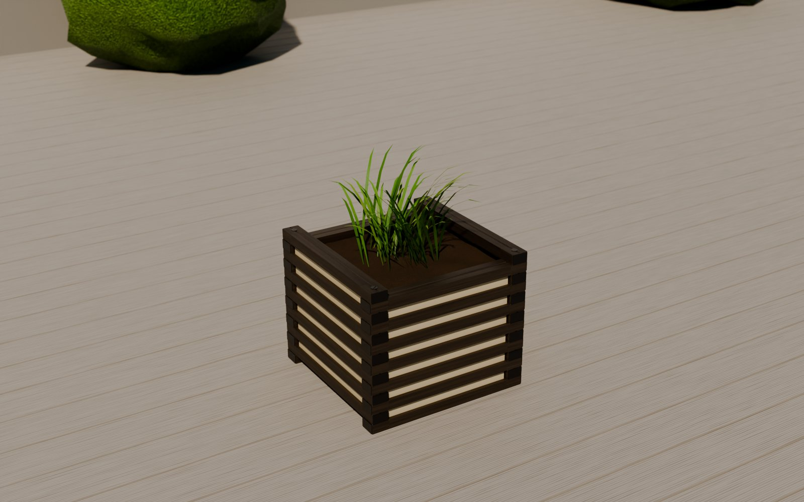

Все цифры взяты из расчётного ядра проекта (engine-p02.js), цены конкурентов — из заметок и из поиска 30.09.2026.
Продолжать стоит, но не в нынешнем виде: при лаге 363 ₽ за метр и наценке 60 % кашпо в полтора–два раза дороже деревянных и ДПК-аналогов. В рынок оно попадает, если сойдутся три условия: лага не дороже 250 ₽ за метр, облегчённая конструкция и выпуск партиями.

Цена одного изделия при лаге 363 ₽/м и наценке 60 %. В «Брак, накладные, прочие» входят брак 5 %, накладные 12 % и 650 ₽ прочих расходов на изделие; коробка отдельной строкой в ядре не выделена и сидит внутри этих 650 ₽.
Двигайте ползунки. Голубая полоса — цены похожих кашпо (ДПК и сосна), вертикальная черта — ориентир цены, оранжевая метка — наша цена.
«Партиями» — раскрой лаги сразу на много заказов (почти без обрезков), накладные 8 % вместо 12 %, брак 3 % вместо 5 %, прочие 300 ₽ вместо 650. «С экономией» — молочный поликарбонат и меньше брусков в стенке, подробности ниже.
База — 500/7 как сейчас: себестоимость 10 561 ₽, лага 363 ₽/м. Всё посчитано ядром проекта. Правила при этом соблюдены: каждый торец закрыт заглушкой или уголком, листы стоят в пазах брусков, детали не проходят друг сквозь друга, зимой изделие собирается в укрытие. Файлы проекта не менялись.
| Что меняем | Себест., ₽ | Экономия, ₽ | % | Как это работает | Согласие |
|---|---|---|---|---|---|
| Молочный поликарбонат вместо акрила | 9 832 | 729 | 6,9 | Лист 262 ₽/м² вместо 1 200. Этот же лист идёт на зиму, второй комплект не нужен. Цветной акрил остаётся платной опцией. | не нужно |
| Уголок вместо заглушек | 10 409 | 152 | 1,4 | 4 уголка по 42 см и 24 самореза вместо 56 заглушек по 13 ₽. Сам по себе даёт немного. | не нужно |
| 4 бруска в стенке вместо 7 (ПК + уголок) | 8 612 | 1 949 | 18,5 | 16 брусков и 24 втулки вместо 28 брусков: 3 хлыста вместо 4. Проверки ядра на лето и зиму пройдены. Уголок ядро ставит само — у втулок без листа он обязателен. | не нужно |
| 5 поясов вместо 7 (кашпо 30 см) | 8 071 | 2 490 | 23,6 | Хлыстов 3 вместо 4, но кашпо ниже. Это отдельная модель, а не упрощение. | не нужно |
| 6 поясов вместо 7 | 10 172 | 389 | 3,7 | Хлыстов остаётся 4 — выигрыш маленький. | не нужно |
| Раскрой лаги партией | 10 475 | 86 | 0,8 | У 500/7 раскрой и так почти без обрезков (212 мм на 16 м). У 400/7 из-за 3 отрезков полки нужен 4-й хлыст ради 25 см: партия экономит 1 605 ₽ (15,7 %), у 400/5 — 1 262 ₽ (16 %). | не нужно |
| Прочие 650 → 300 ₽, накладные 12 → 8 %, брак 5 → 3 % | 9 660 | 901 | 8,5 | Когда кашпо делают сериями, постоянные расходы делятся на много штук. Это оценка, её нужно подтвердить первой партией. | не нужно |
| Без поддона | 10 463 | 98 | 0,9 | Поддон 79 ₽. Выигрыш мал — лучше оставить. У 660 поддон стоит 1 250 ₽, там стоит поискать дешевле. | не нужно |
| Всё вместе: ПК + 4 бруска + партия + серия | 7 444 | 3 117 | 29,5 | При лаге 250 ₽/м — 6 050 ₽, при 200 ₽/м — 5 430 ₽. | |
| Трансформер: ПК круглый год | 12 828 | 932 | 6,8 | Второй комплект листов на зиму не нужен (база трансформера — 13 760 ₽). | не нужно |
| Другая лага (40×30, 50×30 других заводов) | −2 130 / −3 080 / −4 020 ₽ при 250 / 200 / 150 ₽/м | Меняется сечение и устройство полостей, поэтому пазы, втулки и заглушки придётся проверить заново. | нужно | ||
| Составной зимний стержень | не считали | Зимний стержень длиной 1,63 м не помещается в коробку 52×48 см и едет отдельной длинной упаковкой, а для маркетплейса это дорого. Составной стержень — новая деталь. | нужно | ||
| Свой профиль с готовым пазом | ≈0,6 мин труда на брусок | Только вместе со своей экструзией (см. ниже). Это меняет канон. | нужно | ||
Розничные цены в России на уличные кашпо и укрытия для туй. Голубые полосы — рынок (от и до). Оранжевые — наше изделие: левый край — «с экономией, партиями, лага 250 ₽/м, наценка 35 %, продаём сами», правый край — «как сейчас, лага 363 ₽/м, наценка 60 %».
| Размер | Рынок ДПК / сосна | Сейчас (+60 %) | Ориентир |
|---|---|---|---|
| 400/5 (40×40×30) | 4 700–10 200 | 12 530 | 6 500 |
| 400/7 (40×40×42) | 6 200–10 200 | 16 390 | 8 000 |
| 500/7 (50×50×42) | 8 800–12 200 | 16 900 | 10 500 |
| 660/12 (66×66×72) | 12 200–21 000 | 41 070 | 18 000 |
| Что | Цена, ₽ |
|---|---|
| Кашпо 50×50 ДПК / сосна | 8 800–12 200 |
| Укрытие для туи: каркас + чехол | 160–1 190 |
| Вместе | 9 000–13 400 |
| Наше 500/7 + зима сейчас (+60 %) | 22 020 |
| Наше с экономией, лага 250, +35 % | 10 560 |
| Ориентир | 12 000 |
| Показатель | Значение |
|---|---|
| Фильера (оснастка под свой профиль) | ≈10 000 $ ≈ 0,8–1 млн ₽ (курс не проверяли) |
| Сырьё на метр лаги | ≈50–60 ₽ (оценка из заметок) |
| Цена метра на заказном производстве | ≈100 ₽ — оценка, в открытых данных нет |
| Минимальная партия | у заводов ДПК не опубликована; для похожего ПВХ-профиля — 10 000 м |
| 10 000 м лаги — это | ≈900 кашпо 500/7 (11 м на кашпо с экономией) |
| Деньги на старт | ≈2 млн ₽ (фильера + первая партия 10 000 м × 100 ₽) |
| Окупается фильера против лаги за 250 ₽/м | после ≈6 300 м ≈ 570 кашпо |
| … против лаги за 200 ₽/м | после ≈9 500 м ≈ 860 кашпо |
| … против нынешних 363 ₽/м | после ≈3 600 м ≈ 330 кашпо |
Вывод: своя лага имеет смысл, только если продаётся 600–900 кашпо в год. Первый сезон дешевле работать на покупной лаге за 200–250 ₽/м.